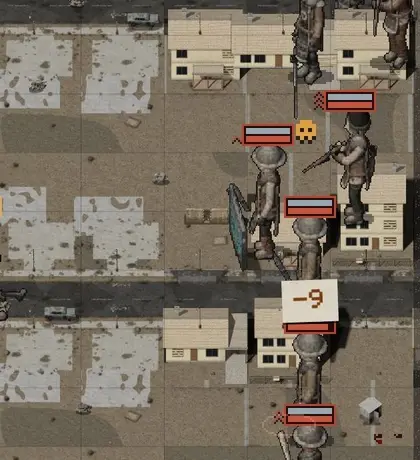
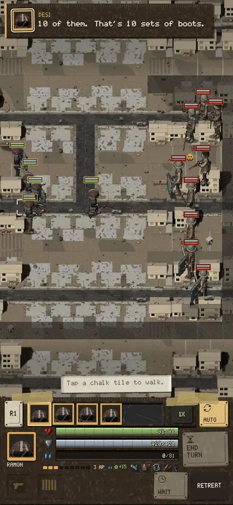

Five killers used to win every job. Now the road crews come with their best men, and some of them bring a champion.

OLD VEGAS, the House's sergeant-at-arms. The gold skull means champion: more health, better aim, his best armour. Kill him and his weapon always drops, plus 7 batteries from his pockets.

Your five men (left) against a three-star House crew of twelve on day 90.
FIVE MEN OF LEVEL 11, DAY 90, AGAINST BRIGANDS (WON OUT OF 100)
job
before
now
1 star
100
92
2 stars
100
58
3 stars
100
8
Before, five strong men only ever met the middle-game crews, so every job was a walkover with nobody hurt.
Now the crews read your men as they are. Five men of level 11 get the late-game crews: more marauders, heavier armour.
When the job wants more men than fit on the board, the extra comes as better men instead.
Champions: never on a one-star job. On a three-star job late in the game, about half the crews bring one. Every faction has its own named ones.
Still too easy: the House, the hired guns and the heavies. Five killers win all of their jobs. That is the next fix.
The champion names are drafts. You meet this on the COMBAT screen, in the hard jobs and on the road late in the game.